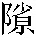

手稿本原題「鬼媒狐女」，塗改。
廣平馮生，少輕脱，縱酒。〔馮評〕輕脱縱酒，馮生之搆禍皆由於此。〔手稿本某甲評〕提綱。〔但評〕四字定案。○輕脱已非修身保身之道，况又縱酒乎？馮生一生跳不出此四字外。得美妻以此，遘奇禍亦以此。閨中有直諫而卒莫之改，此辛十四娘所以僅脱其禍而不能與之仙去也。〔何評〕四字定馮一生，得婦搆禍，皆由於此。昧爽偶行， 「廣平馮生，少輕脱縱酒」：手稿本「馮生」右下補「正德間人」四字，疑抄寫青本、黄本之底本時抄家增補。今據鑄本、異史本、二十四卷本删。遇一少女，着紅帔，容色娟好，從小奚奴， 小奚奴：〔吕註〕新唐書·李賀傳：「從小奚奴，背古錦囊，遇所得，書投囊中。」○按：奚，隸役也。周禮·天官：「酒人奚三百人。」躡露奔波，履襪沾濡，心竊好之。薄暮，醉歸，道側故有蘭若，久蕪廢， 「久蕪廢」：二十四卷本作「蕪廢已久」。有女子自内出，則向麗人也。忽見生來，即轉身入。陰念 「陰念」：鑄本作「陰思」。：麗者何得在禪院中？縶驢於門，往覘其異。入則斷垣零落，階上細草如毯。 毯：〔何註〕土敢切，毛席也。彷徨間， 二十四卷本「毯」作「毡」，「彷」上有「正」字。一斑白叟出，衣帽整潔，問客何來，生曰：「偶過古刹， 古刹：〔吕註〕蘇軾遊真如詩：「獨携二子出，古刹訪禪祖。」註：「刹，僧寺也。」欲一瞻仰。翁何至此？」 「翁何至此」：鑄本作「因問翁何至此」。叟曰：「老夫流寓無所，暫借此安頓細小。既承寵降，有山茶可以當酒。」乃肅賓入。 鑄本「山」上無「有」字。「賓」：二十四卷本作「生」。見殿後一院，石路光明，無復蓁莽。 蓁莽：〔何註〕草也。入其室，則簾幌牀幙， 幌幙：幌音晃，帷幔也。幙，亦帷也。香霧噴人。坐展姓字，云：「蒙叟姓辛。」生乘醉遽問曰 青本無「遽」字。：「聞有女公子，未遭良匹。 「遭」：二十四卷本作「適」。竊不自揣，願以鏡臺自獻。」 鏡臺自獻：〔吕註〕世説：「温嶠喪婦。從姑劉氏女有姿，慧。姑囑覓婿。嶠自有婚意，答曰：『佳婿難得，但如嶠何如？』姑曰：『何敢希汝也。』他日，報曰：『已得之矣。門第粗可，婿身名宦，盡不减嶠。』因下玉鏡臺一枚。姑大喜。既婚交禮，女以手披紗扇大笑曰：『我固疑是老奴。』」〔何評〕輕脱。〔馮評〕狂妄聲口。辛笑曰：「容謀之荆人。」生即索筆爲詩曰：「千金覓玉杵， 玉杵：〔何註〕裴航過藍橋，求漿。見雲英，欲娶之，英曰須得玉杵。殷勤手自將。雲英如有意，親爲搗玄霜。」 「雲英」句：〔吕註〕裴鉶傳奇：「裴航遇雲翹夫人，與詩云：『一飲瓊漿百感生，玄霜搗盡見雲英；藍橋便是神仙窟，何必崎嶇上玉京』？後過藍橋驛，渴。茅舍有老嫗，揖之，求漿。嫗令雲英以一甌漿飲之。航欲娶雲英。嫗言：『已有靈丹，須得玉杵臼搗之，得玉杵臼，當相與。』後航購得之。嫗乃令搗藥百日，嫗吞之，先入洞，告姻戚來迎航及女。就禮後，航及妻入玉洞爲上仙。」〔王評〕詩□佳。主人笑付左右。 「主人笑付左右」：手稿本原作「主人胡盧而笑，顧付左右」，塗改。少間，有婢與辛耳語。辛起，慰客耐坐，牽幕入，隱約三數語， 「辛起慰客耐坐，牽幕入」，手稿本原作「辛起曰：『客小耐坐，即復來。』遂牽幕入」，塗改。鑄本無「三」字，二十四卷本「牽」上有「乃」字。〔但評〕隱約三數語，可想而知。老雌狐觀人於微，具有卓見。即趨出。生意必有佳報，而辛乃坐與嗢噱， 嗢噱：〔吕註〕魏志裴松之謂鍾繇：「得書嗢噱。」註：「嗢噱，笑也。」〔何註〕嗢，烏骨切，音近兀。嗢噱，談笑也。但與談笑，不言姻事也。△按：嗢音沃。不復有他言。生不能忍，問曰：「未審意旨， 「未審意旨」：手稿本原作「未審老人意旨」，塗改。幸釋疑抱。」辛曰：「君卓犖 卓犖：〔何註〕犖音落，超絶也。士，傾風已久。但有私衷，所不敢言耳。」生固請之。 鑄本「請」下無「之」字。辛曰：「弱息十九人，嫁者十有二。 「十有二」：鑄本、異史本、二十四卷本作「十二有」。醮命任之荆人，老夫不與焉。」生曰：「小生衹要得今朝領小奚奴帶露行者。」〔何評〕輕脱。辛不應。相對默然。聞房内嚶嚶膩語，〔但評〕「卓犖」二字，對輕脱縱酒而反譏之也。醮命諉之婦人，以隱約之三數語，不便面述，非真不敢與聞也。即房内嚶嚶膩語，安知不以鄉曲之儇子薄之乎？觀其後喪德殺身，早知今日諸語，輕薄之態，此際已窺之稔矣。生乘醉搴簾曰：「伉儷既不可得， 手稿本「膩語」下原有「依稀有一紅衣人在」，塗去。黄本「既不」作「不」。當一見顔色，以消吾憾。」〔手稿本某甲評〕輕態如畫。内聞鈎動，羣立愕顧。果有紅衣人，振袖傾鬟，亭亭拈帶。 「紅衣人振袖傾鬟，亭亭拈帶」：手稿本原作：「女子衣淡紅者，振袖傾鬟，娟娟都雅」，塗改。望見生入，遍室張皇。辛怒，命數人捽生出。酒愈涌上，倒蓁蕪 蓁蕪：〔何註〕草莽也。中。瓦石亂落如雨，〔但評〕未曾獻鏡臺，却先報之以瓦石，是後日府尹搒掠預兆。幸不着體。 「着體」：手稿本「體」字殘去，今據衆參校本補。卧移時，聽驢子猶齕草路側，〔馮評〕晁端有詩云：「小雨愔愔人不寐，卧聽瘦馬嚙殘芻。」寫得静中景色出。此在酒醉後尤覺逼真。乃起跨驢，踉蹡 踉蹡：〔何註〕音亮蹌，不速不正也，潘岳射雉賦：「踉蹡而徐來。」又註：「踉蹡，行不能正履也。」而行，夜色迷悶，誤入澗谷，狼奔鴟叫，竪毛寒心；踟蹰 踟蹰：〔何註〕音馳厨。欲行不進也。四顧，並不知其何所。 「知其」：二十四卷本作「知爲」。遥望蒼林中，燈火明滅，疑必村落， 「必」：黄本作「心」，異史本無此字。竟馳投之。〔馮評〕又開異境。仰見高閎， 閎：〔何註〕音宏，門也。以策 策：〔何註〕鞭也。撾門，内有問者曰：「何處郎君半夜來此？」生以失路告。問者曰 「内有問者」：鑄本作「内問」，二十四卷本作「内有門者」。「何處郎君」：鑄本作「何人」。「告」下「問者」，鑄本作「内」，二十四卷本作「門者」。：「待達主人。」生纍足鵠竢。 纍足鵠竢：〔何註〕纍足：猶側足，不敢正立也。鵠竢：竢，古俟字。引頸相望也。忽聞振管闢扉， 振管闢扉：〔何註〕振管，動管；闢扉，開門也。一健僕出，代客捉驢。生入，見室甚華好，堂上張燈火。少坐，有婦人出，問客姓字。生以告。 「聞」：異史本作「有人」。「婦人」：手稿本原作「中年婦人」，塗改；「字」：諸參校本作「氏」。二十四卷本「代客」作「代生」，「以」上有「具」字。逾刻，青衣數人扶一老嫗出，曰：「郡君 郡君：〔吕註〕按：漢武帝尊王太后母臧兒爲平原郡君，此封郡君之始也。至。」生起立，肅身欲拜，嫗止之坐，謂生曰：「爾非馮雲子之孫耶？」曰：「然。」嫗曰：「子當是我彌甥。 彌甥：〔何註〕外甥也。〔吕註〕左傳·哀二十三年：「季康子曰：『以肥之得備彌甥也。』」註：「彌，遠也。康子父之舅氏，故稱彌甥。」老身鐘漏並歇， 鐘漏並歇：〔何註〕猶言鐘鳴漏盡，喻此生已過也。〔吕註〕宋許觀東齋記事：「今言人之衰老，則曰鐘鳴漏盡。田豫爲并州刺史，年老求遜位。司馬仲達以爲豫充壯，書喻未聽。豫答曰：『年過七十而以居位，譬猶鐘鳴漏盡，而夜行不休，是罪人也。』」殘年向盡，骨肉之間，殊所乖闊。」 「曰然」：二十四卷本作「生曰然」。「所」：鑄本作「多」。生曰：「兒少失怙，與我祖父處者，十不識一焉。素未拜省，乞便指示。」 「乞」：二十四卷本作「祈」。嫗曰：「子自知之。」〔馮評〕又不説明。奇。生不敢復問，坐對懸想。嫗曰：「甥深夜何得來此？」生以膽力自矜詡，〔但評〕被捽而以膽力自矜詡，可知習氣難改。遂一一歷陳所遇。 鑄本無「一一」二字。嫗笑曰：「此大好事。况甥名士，殊不玷於姻婭， 「婭」：手稿本、黄本、鑄本、二十四卷本作「姻」，今據青本、異史本改。野狐精何得强自高？〔馮評〕微露出。甥勿慮，我能爲若致之。」生稱謝唯唯。 「若」：青本、黄本作「婉」。鑄本、異史本、二十四卷本無「稱」字。嫗顧左右曰：「我不知辛家女兒，遂如此端好！」青衣人曰：「渠有十九女，都翩翩有風格。不知官人所聘行幾。」 「所聘」：二十四卷本作「所欲聘者」。生曰：「年約十五餘矣」。青衣曰：「此是十四娘。三月間， 青本「衣」下有「人」字。「三月間」：異史本無。曾從阿母壽郡君，何忘却？」嫗笑曰：「是非刻蓮瓣爲高履，實以香屑，蒙紗而步者乎？」〔馮評〕每於極瑣事隨口謅出，隨筆點綴，是史家頰上添毫法。青衣曰：「是也。」嫗曰：「此婢大會作意，弄媚巧。然果窈窕， 「窈窕」：手稿本作「窈窕」，今據衆參校本改。阿甥賞鑒不謬。」即謂青衣曰：「可遣小狸奴唤之來。」青衣應諾，去移時，入白：「呼得辛家十四娘至矣。」旋見紅衣女子望嫗俯拜。嫗曳之曰：「後爲我家甥婦，勿得修婢子禮。」 「望嫗俯拜。嫗曳之曰：『後爲我家甥婦，勿得修婢子禮』」：二十四卷本「俯」作「伏」，「後」作「即」，「得」作「仍」：鑄本無「曳之」二字。女子起，娉娉而立， 「娉娉」：黄本作「娉婷」。紅袖低垂。嫗理其鬢髮， 手稿本「嫗」上原有「裊如煙柳」，塗去。捻其耳環，〔馮評〕老姥性情形狀如見。曰：「十四娘近在閨中作麼生？」 作麼生：〔何註〕麼生，謂甚麼生活也。歐陽修詩：「問向青州作麼生。」〔吕註〕傳燈録：「天柱崇慧禪師，僧問：『達摩未來時還有佛法也無？』師曰：『未來且置，即今事作麼生？』」貫休懷周樸張爲詩：「白髮應全白，生涯作麼生？」女低應曰：「閑來衹挑綉。」回首見生，〔但評〕前已三次寫女，都是虚寫。此復蜿蜒而入，從生口中點其年，從青衣人口中點其名，從嫗口中點其端好媚巧，然後唤之。及入白辛家十四娘至矣，可以直落出見生矣；乃先説生見女拜嫗，見嫗曳女，見女娉娉而立，見嫗理其鬢髮，捻其耳環，又間以問答語，然後説回首見生。香山詩云：「千呼萬唤始出來，猶抱琵琶半遮面。」文境似之。羞縮不安。〔馮評〕插一句，妙。嫗曰：「此吾甥也。盛意與兒作姻好，何便教迷途，終夜竄谿谷？」女俯首無語。嫗曰：「我唤汝非他，欲爲阿甥作伐耳。」 「阿」：青本、黄本作「我」，鑄本、二十四卷本、異史本作「吾」。女默默而已。嫗命掃榻展裀褥，即爲合卺。女覥然曰：「還以告之父母。」嫗曰：「我爲汝作冰，有何舛謬？」女曰：「郡君之命，父母當不敢違。然如此草草，婢子即死，不敢奉命。」〔但評〕有媒妁之言，猶須待父母之命，如此草草，即死不敢奉命。可知以禮自守，即君父亦不能奪之也。嫗笑曰：「小女子志不可奪， 「志不可奪」：手稿本原作「志不必奪」，塗改。真吾甥婦也！」〔但評〕天下豈有唤來即合卺者耶？如此草草，則何時何事不可草草？今日不可草草，即死不敢奉命，志不可奪，所以他日處患難時，而能以身任也。彼屈於勢利者，自視太輕，無所不可；一遇有事故，那能擔代得起。乃拔女頭上金花一朵，付生收之。命歸家檢曆，以良辰爲定。 「收之，命歸家檢曆，以良辰爲定」：手稿本原作「曰：可收之，歸家檢曆，生但有嫁娶良辰，新人便到耳」，塗改，並「檢曆」旁有「涓吉」二字，當爲後人所加。乃使青衣送女去。聽遠鷄已唱，遣人持驢送生出。數步外，欻一回顧， 「遣人」：二十四卷本作「遣役」。「回顧」：青本、黄本作「回頭顧」。則村舍已失，但見松楸 楸：〔何註〕楸音秋，梓屬。濃黑，蓬顆 蓬顆：〔何註〕顆，土也。漢書·賈山傳：「使其後世曾不得蓬顆蔽冢而託葬焉。」註：「謂塊上生蓬者耳。」蔽冢而已。〔但評〕終日昏昏醉夢間。〔馮評〕以上朦朧不明，四語分曉。定想移時，乃悟其處爲薛尚書墓。薛故生祖母弟， 「薛故生祖母弟」：鑄本作「薛乃生故祖母弟」。故相呼以甥。心知遇鬼，然亦不知十四娘何人。咨嗟而歸。漫檢曆以待之，而心恐鬼約難恃， 「檢曆」：青本作「涓吉」。「而心恐鬼約難恃」：手稿本原作「而中心怔營，惟恐鬼約難恃」，塗改。再往蘭若，則殿宇荒凉；問之居人，則寺中往往見狐狸云。陰念：若得麗人，狐亦自佳。 「問之居人，則寺中往往見狐狸云。陰念若得麗人，狐亦自佳」：手稿本原作「無復人面，問之居人，住寺中往往見狐狸云。自念佳人若得，狐婦亦佳」，塗改；「陰」：異史本作「隱」，「則寺中」：二十四卷本作「則言寺中」。至日，除舍掃途，更僕 更僕：〔吕註〕禮·儒行：「哀公曰：『敢問儒行。』孔子對曰：『遽數之不能終其物；悉數之乃留，更僕未可終也。』」註：「更僕，更代其僕也。」眺望。夜半猶寂，生已無望。 「更僕眺望，夜半猶寂，生已無望」：手稿本原作「翹足凝待，更僕眺望，夜半猶寂，生輾轉不能夕，中心若弔」，塗改。頃之，門外嘩然。躧屣出窺，則綉幰 綉幰：〔吕註〕見瞳人語「朱紼綉幰」註。〔何註〕倉頡篇：「帛張車上曰幰，所以蔽日也。」已駐於庭，雙鬟扶女坐青廬中。 「鬟」：鑄本、異史本、手稿本作「環」，同「丫」結合，二字通假，今從青本、黄本、二十四卷本。妝奩亦無長物，惟兩長鬣奴扛一撲滿， 撲滿：〔吕註〕西京雜記：「撲滿者，蓄錢具也，以土爲之；有入竅而無出竅，滿則撲之。」大如甕，息肩置堂隅。 「撲」：二十四卷本作「襆」。生喜得麗偶， 手稿本「麗偶」下原有「如涸鮒之得甘霖」七字，塗去。「麗偶」：鑄本作「佳麗偶」。並不疑其異類，問女曰：「一死鬼，卿家何帖服之甚？」女曰：「薛尚書，今作五都巡環使，數百里鬼狐皆備扈從，故歸墓時常少。」 二十四卷本無「墓」字。生不忘蹇修， 蹇修：〔何註〕離騷：「解佩纕以結言兮，吾令蹇修以爲理。」註：「爲媒以通辭理。」翼日往祭其墓。歸，見二青衣，持貝錦爲賀，竟委几上而去。 手稿本「竟」上原有「問之不答」四字，塗去。生以告女，女視之， 鑄本無「視之」二字。曰：「此郡君物也。」〔但評〕此以上叙生以輕脱縱酒而得妻。然得妻全賴蹇修之力，猶是意外之幸也。此以下叙生以輕脱縱酒而遘禍。雖有賢婦規戒，而終不悛，則禍乃意中之事矣。邑有楚銀臺之公子，〔馮評〕又生波折。少與生共筆硯，頗相狎。 「頗相狎」：手稿本原作「相狎擾」，刪「擾」。今據諸參校本補「頗」字。聞生得狐婦，饋遺爲餪， 餪：〔何註〕音暖，女嫁後三日餉食爲餪女。〔吕註〕集韻：「餪，奴亂切，音偄。婚之三日而宴謂之餪。」即登堂稱觴。越數日，又折簡來招飲。女聞，謂生曰：「曩公子來，我穴壁窺之，其人猿睛而鷹準， 鷹準：〔吕註〕史記·高祖本紀：「隆準而龍顔。」準音拙，鼻也。 「睛」：黄本作「目」。「凖」：異史本、二十四卷本作「隼」。鑄本「睛而」作「睛」。不可與久居也。〔但評〕女何必窺客？知生之爲人，而探其所與久居者何如人耳。宜勿往。」生諾之。翼日，公子造門， 「造門」：鑄本、二十四卷本、異史本無「門」字。問負約之罪，且獻新什。〔馮評〕春雲漸展。生評涉嘲笑，公子大慚， 「評涉嘲笑，公子大慚」：手稿本原作「嗤嗤笑，且讀之，公子大慚」，塗改。不歡而散。生歸， 「歸」：黄本作「入」。笑述於房，女慘然曰：「公子豺狼，不可狎也！〔但評〕曰猿睛，曰鷹準，曰豺狼，若而人者，吾畏之避之，願終身不得見之。若狐也，吾友之，吾且事之。子不聽吾言，將及於難。」生笑謝之。〔但評〕生笑述而女慘言，非慘公子豺狼，而慘生之嘲笑也。女慘言之，生笑謝之，可知其必不能改矣。後與公子輒相諛噱，前郄 郄：〔何註〕同 
獨居數日，又託媒媪購良家女，名禄兒，年已及笄，容華頗麗；與同寢食，撫愛異於羣小。 鑄本無「已」字。「撫愛異於羣小」下，手稿本原作「自生被收，用度益繁，年餘，漸不自給，主婢食貧，然囹圄資斧未嘗一日缺」，塗去。〔但評〕推波助瀾，飛煙結霧，遂爾警策，令人目眩心迷。悟此自可除平鋪直叙之病。〔馮評〕弄鬼弄神，令人不測。生認誤殺，擬絞。蒼頭得信歸，慟述不成聲。女聞，坦然若不介意。既而秋决有日，女始皇皇躁動， 「躁動」：二十四卷本作「慘動」。晝去夕來無停履；每於寂所，於邑悲哀，至損眠食。〔馮評〕包括一切。一日日晡，狐婢忽來。女頓起，相引屏語。 屏語：〔何註〕屏音丙，屏退左右而言也。禮·曲禮：「侍於子，有告者曰：“少間，願有復焉。”則左右屏而退。」出則笑色滿容， 「容」：二十四卷本作「面」。料理門户如平時。翼日，蒼頭至獄，生寄語娘子一往永訣。 「生寄語」：二十四卷本作「生日寄語」。蒼頭復命，女漫應之，亦不愴惻，殊落落置之。 「置之」：手稿本原作「置度外」，塗改。〔馮評〕陡筆，令人不測。家人竊議其忍。忽道路沸傳：楚銀臺革爵， 「爵」：鑄本、異史本、二十四卷本作「職」。平陽觀察奉特旨治馮生案。蒼頭聞之喜， 「蒼頭聞之喜」：手稿本原作「蒼頭聞而大喜」，塗改。告主母。女亦喜，即遣入府探視，則生已出獄。相見悲喜。俄捕公子至，一鞫，盡得其情。生立釋寧家。歸見闈中人， 「闈中人」：鑄本、二十四卷本作「女」。泫然流涕，女亦相對愴楚。悲已而喜，〔馮評〕此段仍不説明。然終不知何以得達上聽。女笑指婢曰：「此君之功臣也。」〔但評〕先斷後叙。生愕問故。先是，女遣婢赴燕都，欲達宫闈，爲生陳冤。〔手稿本某甲評〕補叙前遽遣婢子案。〔但評〕不謂輕薄縱酒者，有此内助，有此功臣。婢至，則宫中有神守護， 「先是，女遣婢赴燕都，欲達宫闈爲生陳冤。婢至，則宫中有神守護」：手稿本原作「婢曰：初奉小姐命赴燕都，欲達宫闈爲官人陳冤抑，不意宫中都有神明守護」，塗改。「冤」：異史本、鑄本、二十四卷本作「冤抑」。徘徊御溝 御溝：〔何註〕中華古今注：「長安御溝謂之楊溝，以植楊於其上也。」〔吕註〕一曰羊溝，謂羊喜抵觸垣牆，爲溝以隔之，故曰羊溝。引終南山水從宫内過，故曰御溝。間，數月不得入。婢懼誤事，方欲歸謀，忽聞今上將幸大同，婢乃預往，偽作流妓。上至勾闌， 勾闌：〔何註〕妓院也。〔吕註〕南宋市肆記：「有瓦子、勾闌，又謂之邀棚。」極蒙寵眷，〔馮評〕須記得開首書「正德間」三字，非同泛泛。蓋武宗嘗出宣、大，幸妓劉美人，事非無因，若他帝王則殊欠自然矣。疑婢不似風塵人。婢乃垂泣。 「婢懼誤事，方欲歸謀，忽聞今上將幸大同，婢乃預往，偽作流妓。上至勾欄，極蒙寵眷，疑婢不似風塵人。婢乃垂泣」：手稿本原作「我惶恐懼誤，方欲謀歸，忽聞今上將幸大同，婢子乃預往，偽作流妓。上至勾欄，妾蒙寵眷。顧謂我不似風塵人。我乃垂泣」，塗改。「今上」：手稿本旁有「天子」二字，但「今上」未塗去；青本作「天子」，二十四卷本作「聖駕」。上問：「有何冤苦？」婢對：「妾原籍隸廣平，生員馮某之女。 「何冤苦？婢對：『妾原籍隸廣平，生員馮某之女』」：手稿本「婢對」原作「婢子對」，「某」作「女」，塗改；異史本「苦」作「抑」，「隸」作「直隸」；青本、黄本無「隸」字，鑄本「妾」上有「曰」字，並二十四卷本「隸」上有「直」字。父以冤獄將死，遂鬻妾勾闌中。」上慘然，賜金百兩； 手稿本「賜」下原有「我」字，塗去。臨行細問顛末，以紙筆記姓名，且言欲與共富貴。婢言：「但得父子團聚，不願華膴 華膴：〔何註〕膴音武。華以服飾居處言，膴以肥甘言也。也。」上頷之，乃去。 「婢言」：手稿本原作「我言」，塗改。「乃去」：二十四卷本作「而去」。婢以此情告生。〔馮評〕遥接。完婢一段事。生急拜， 「婢以此情告生，生急拜」：手稿本原作「生急拜履側」，鑄本「拜」上有「起」字。淚眦雙熒。居無幾何，女忽謂生曰：「妾不爲情緣，何處得煩惱？〔但評〕由情緣而得煩惱，是真煩惱；由酸衷而生厭苦，是真厭苦。○一入情緣，便生煩惱。情緣無了時，則煩惱亦無盡境。有生便有滅，易生便難滅。如要盡滅，除是不生。從何處得將來，須從何處脱將去。韜光遠引，立地便是真仙。君被逮時，妾奔走戚眷間，並無一人代一謀者。 「代」：手稿本原作「可代」，塗改。〔何評〕十四娘尚如此，世情可知。爾時酸衷，誠不可以告訴。今視塵俗益厭苦。我已爲君畜良偶， 二十四卷本「良」上有「一」字。可從此别。」〔馮評〕若女急去便少致。生聞， 手稿本「聞」下原有「大驚」二字，塗去。泣伏不起，女乃止。夜遣禄兒侍生寢，生拒不納。朝視十四娘，容光頓减；又月餘，漸以衰老；半載，黯黑如村嫗。 「黑」：二十四卷本作「然」。生敬之，終不替。女忽復言别，且曰：「君自有佳侣，安用此鳩盤 鳩盤：〔吕註〕御史臺記：「唐任環畏妻，杜正倫譏弄之。環曰：『婦當畏者三：少妙之時，如生菩薩；及兒女滿前，如九子魔母；至五六十時，傅施妝粉，或青或黑，如鳩盤荼，此非可畏者耶？』」○按：鳩盤荼，鬼名也。環好佞佛，故以爲此。爲？」生哀泣如前日。又逾月，女暴疾，絶食飲，羸卧閨闥。 「食飲」：鑄本作「飲食」。「闥」：青本、黄本作「闈」。生侍湯藥，如奉父母。巫醫無靈，竟以溘逝。 溘逝：〔何註〕溘，奄忽也；逝，往也。生悲怛欲絶，即以婢賜金，〔馮評〕「賜金」二字他人已忘却矣。爲營齋葬。數日，婢亦去，遂以禄兒爲室。逾年舉一子。 「婢賜」：二十四卷本作「上賜」。「舉」：鑄本作「生」。然比歲不登，家益落。夫妻無計，對影長愁。 「夫妻無計，對影長愁」：手稿本原作「朝不謀夕，日唯對影長愁」，塗改。忽憶堂陬撲滿，常見十四娘投錢於中，不知尚在否。〔手稿本某甲評〕收結撲滿。近臨之，則豉具鹽盎， 豉具鹽盎：〔何註〕豉，豆豉也，盎，缶也。盆也。羅列殆滿，頭頭置去，箸探其中，堅不可入；撲而碎之，金錢溢出。由此頓大充裕。後蒼頭至太華，遇十四娘，乘青騾， 「金錢溢出，由此頓大充裕」：手稿本原作「阿堵物傾注而出，百千且溢，夫婦狂喜，資以御窮，頓大充裕」，塗改。「乘」：二十四卷本作「騎」。婢子跨蹇以從，問：「馮郎安否？」〔何評〕間舊。且言：「致意主人，我已名列仙籍矣。」〔但評〕問馮郎猶輕薄否？我已名列仙籍矣。〔何評〕寄聲好。言訖，不見。
異史氏曰：「輕薄之詞，多出於士類，此君子所悼惜也。余嘗冒不韙之名， 不韙之名：〔吕註〕左傳·隱十一年：「犯五不韙而以伐人，其喪師也不亦宜乎？」註：「韙，是也。」言冤則已迂；然未嘗不刻苦自勵，以勉附於君子之林，而禍福之説不與焉。〔但評〕余亦有鑒於此，故於先生之戒人者，低徊之而不去。〔馮評〕聊齋才人，於朋輩中出輕薄語或亦有之，然余觀其議論心術，君子人也。若馮生者，一言之微，幾至殺身，苟非室有仙人，亦何能解脱囹圄，以再生於當世耶？可懼哉！」 「可懼哉」：二十四卷本作「吁！可懼哉」。
〔何評〕「輕薄之態，施之君子則喪吾德，施之小人則喪吾身。」能守斯言，雖至聖賢可也，豈但神仙哉！辛十四娘名列仙籍而不與俱，正恐佻脱者非其器也。
〔方評〕十四娘剛介若李勢女，知人若山公妻，險阻不驚，艱難求濟，若許允婦，誰謂婦人不可比踪英杰耶？
〔校記〕（底本：手稿本 參校本：青本、黄本、異史本、二十四卷本、鑄本）
本章完!